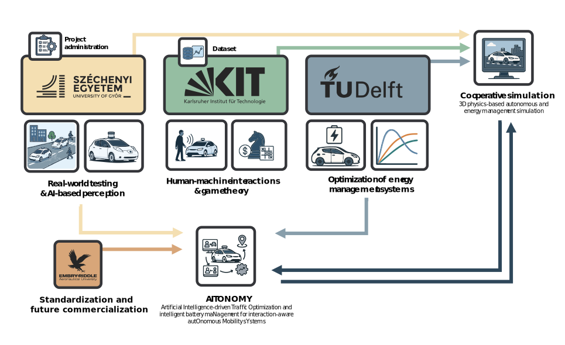

AITONOMY
Project overview
The project aims to develop an integrated framework for autonomous, cooperative and electric vehicles (ACEVs) addresses two critical and interdependent challenges: ensuring safe and socially aware navigation in complex urban environments and managing battery health and energy efficiency.
Enabling easy data exchange is achieved through a unified layer, promoting cooperation between vehicles.

Partners
| Partner name | Country | Role |
|---|---|---|
| Széchenyi István University | Hungary | Lead partner |
| Karlsruhe Institute of Technology | Germany | Cooperating partner |
| Delft University of Technology | Netherlands | Cooperating partner |
| Embry-Riddle Aeronautical University | USA | Associated partner |
Further information
Integration of autonomous, cooperative, and electric vehicles (ACEVs) into urban transport systems is relevant to ongoing societal and technological trends. Ensuring these vehicles can safely coexist with vulnerable road users (VRUs), as well as human drivers, is crucial for public acceptance and reducing accidents. Given that human error accounts for a significant majority of serious crashes, ACEVs have the potential to enhance road safety, provided they interact transparently and predictably with all other road users, particularly those most at risk.
For more details about the project, please visit the the following URL's: